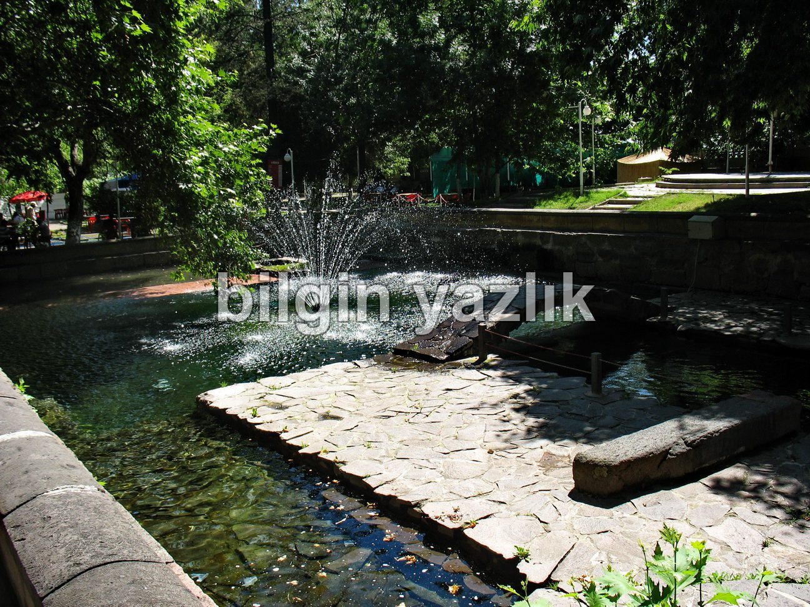
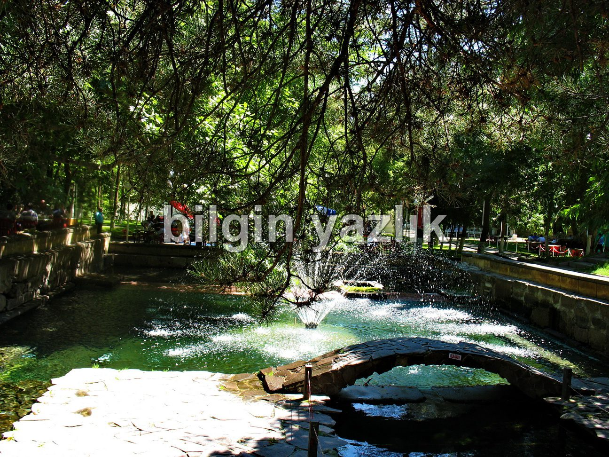
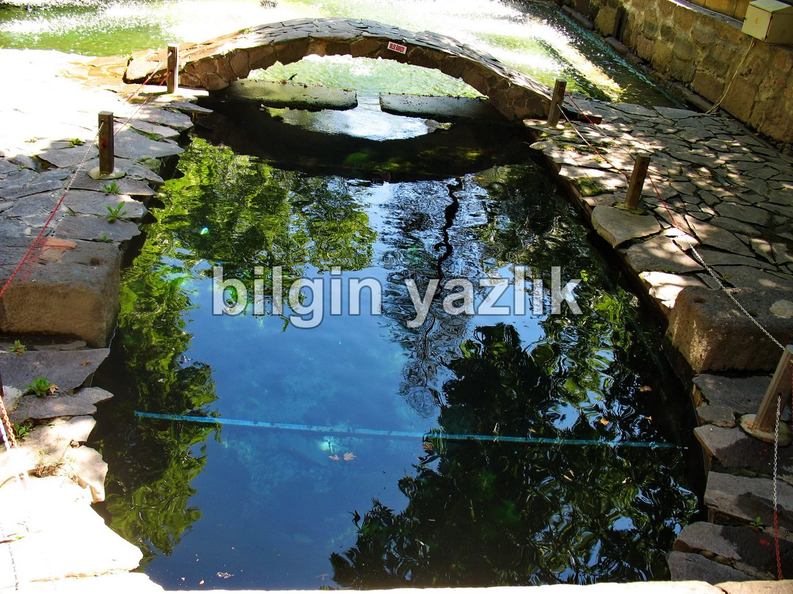
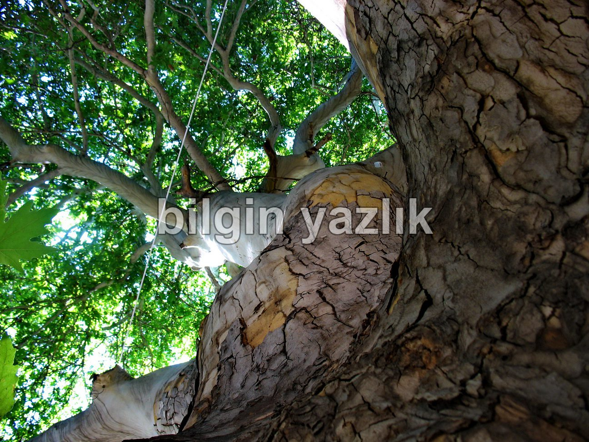

Elbiz
Elbiz’i sadece bir restoran ve kafeteryadan ibaret zannediyorsanız yanılıyorsunuz. Elbiz tarihin ve tabiatın şehrin içinde el ele tutuştuğu cennetten bir köşe.
Kayseri’nin Develi ilçesinin merkezinde yer alıyor, Elbiz. Elbiz, Roma döneminden günümüze kadar ayakta kalmayı başarmış kocaman bir havuz, hemen yanı başında yükselen asırlık anıt çınar ağaçları ve çay bahçesi kombinasyonunun en güzel örneklerinden belki de eşsiz örneklerinden biri.
Havuzun mimarisi çok güzel, aşağıdaki fotoğraflardan havuzu detaylı olarak görebilirsiniz. Yaz aylarında işletmeci kuruluş havuza alabalık atıyor, böylece havuzun seyri doyumsuzlaşıyor. Elbiz’de 2 tane asırlık anıt çınar yer alıyor, her bir çınarın eteğinde künyesi yer alıyor.
Hafta sonu ailecek gidilebilecek, çay yudumlanabilecek, develi cıvıklısı ve ızgara çeşitleri yenilebilecek güzel bir mekan (mekanda alkol ikramı da yapılmaktadır).
Önerdiğim menü: Bir demlik çay, sıcak ince pide, tulum peyniri, domates söğüş, süzme yoğurt.




Bu yazı taliyol arşivinden taşınmıştır. · özgün kayıt